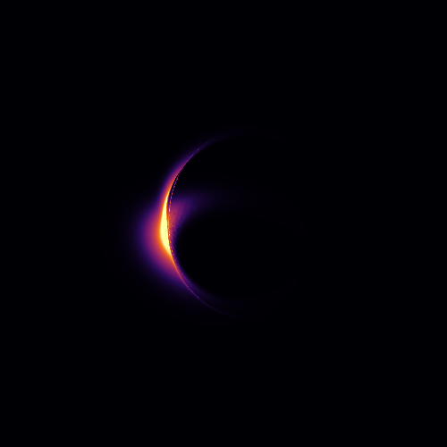
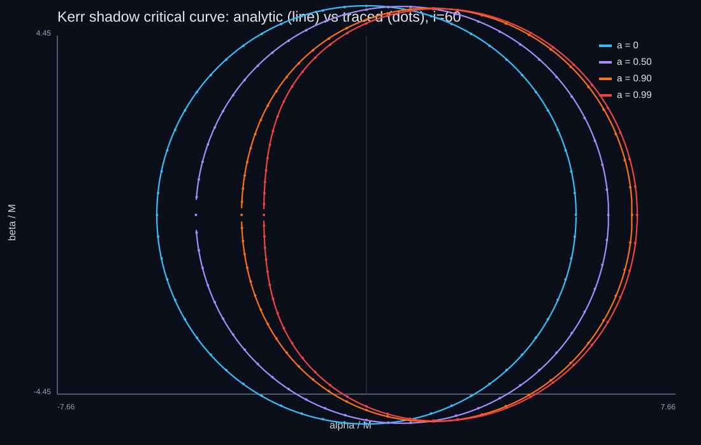
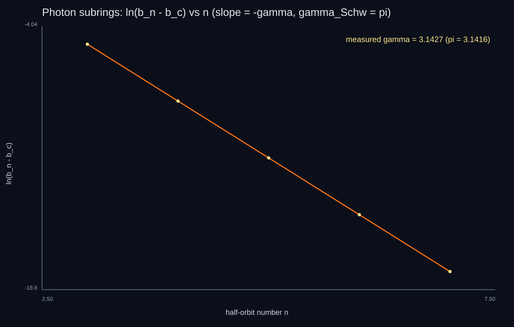
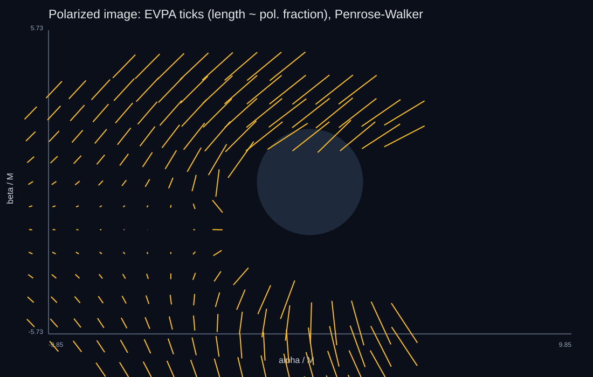
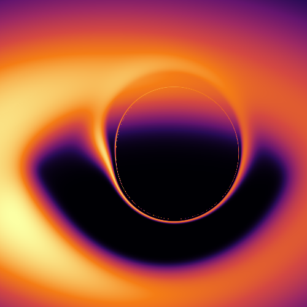
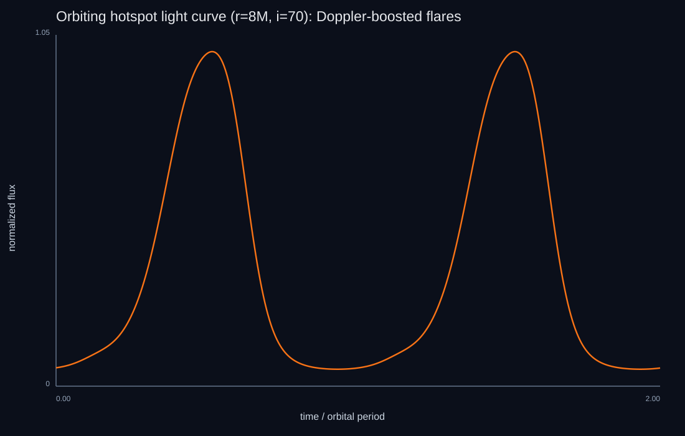
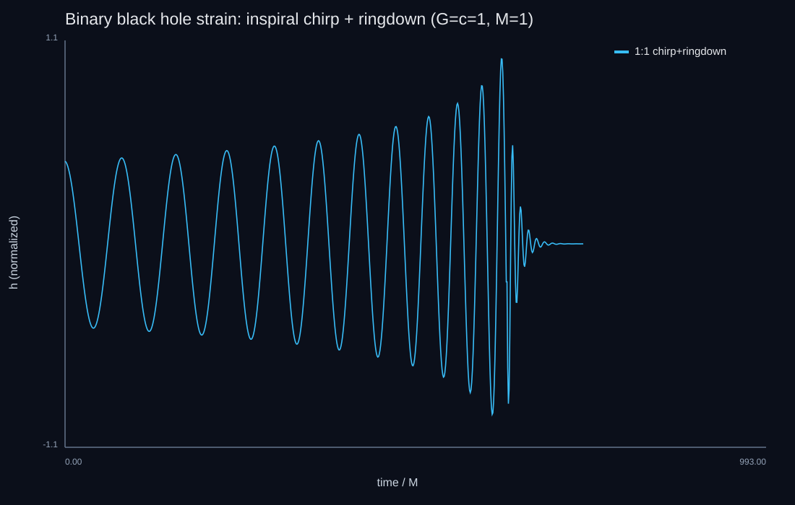

Black Hole Research Extensions
Eight validated research directions built on the GRRT engine — from the EHT crescent and the photon-ring Lyapunov exponent to a binary-merger gravitational waveform.
The Bardeen critical curve — the black-hole shadow — drawn live. Raise the spin and watch the shadow shift sideways (frame dragging) and flatten into the characteristic "D"; change the inclination to view it from a new angle.

One engine, eight frontiers
Because the geodesic right-hand side uses numerical metric derivatives, a new spacetime is one metric() override — so testing the Kerr hypothesis against charged Kerr-Newman, regular Bardeen, and Hayward black holes is nearly free. Each extension is a real, validated computation, with the two genuinely multi-week efforts (turbulent GRMHD, 3+1 numerical relativity) done at the standard reduced-but-rigorous level and labeled as such.

Universal photon-ring structure
Equatorial photons wind by an angle that diverges near the critical impact parameter, and the subring spacing obeys (b_n - b_c) ∝ e^{-γn}. The fit gives γ = 3.143, matching the Schwarzschild value π to 0.03% — the universal photon-ring demagnification of Johnson et al. (2020), reproduced from a traced ray bundle.

From light to images to waves
Covariant radiative transfer of thermal synchrotron yields the EHT crescent; exact Penrose-Walker transport gives a polarized image with |m| ≈ 11%; a Fishbone-Moncrief torus closes the honest fluid-to-image chain at equilibrium. And a semi-analytic inspiral-merger-ringdown — PN chirp, NR-calibrated remnant (a_f = 0.687, 4.8% radiated), Kerr l=m=2 ringdown — reproduces the GW150914 numbers.




This chapter is drawn from the physics-lab study notes and renders. The longer write-ups and project essays live on the blog.